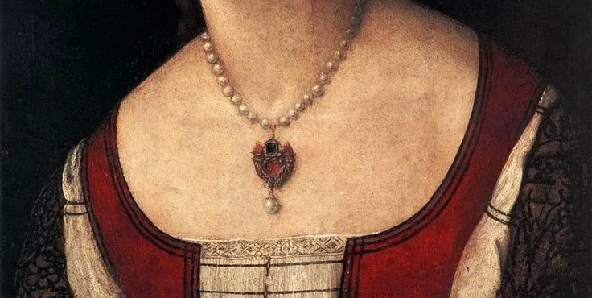
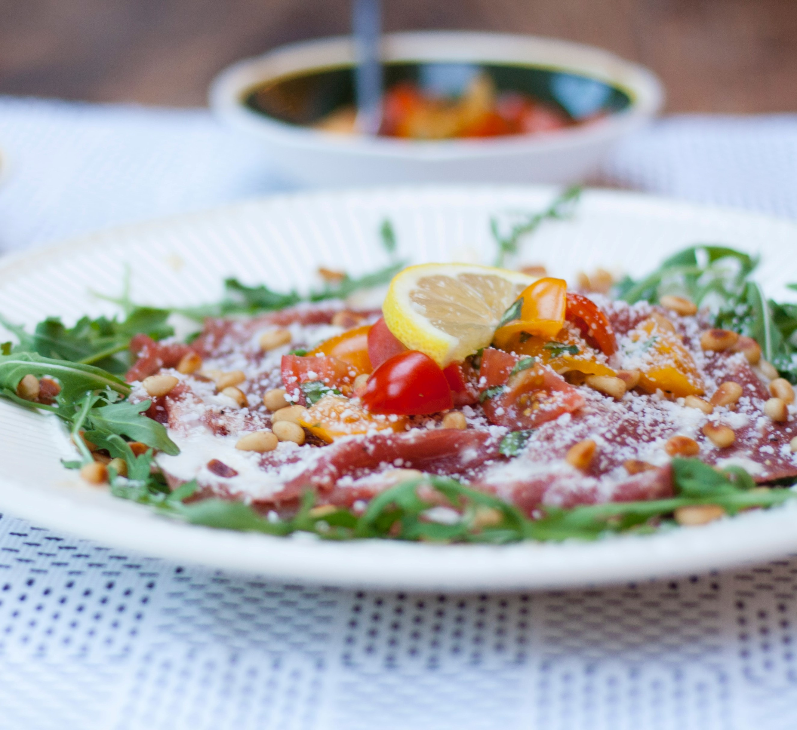

Introduction
Among all Italian appetizers, Carpaccio is probably the most widely served.
The dish was named after Italian painter Vittore Carpaccio, who is known for the red and white - that are reflected in the dish.

Vittore Carpaccio's colors are reflected in this dish (Portrait of a Woman, 1510)
Recipe
- 250g Thinly sliced raw beef
- 50g Mixed Salad
- 5 Cherry tomatoes
- 40g Shaved Parmesan
- 2Tbs (Toasted) pine nuts
- 1Tbs Olive oil
- .5Tbs Balsamic Oil
- 1 Slice (Optional) Lemon
Stack dish according to the listed order (serves 1 person).

Further discovery
An Italian passionately explaining his take on the Carpaccio.
Food has an elevated meaning in Italian culture, it relates to their culturally engraned principle of 'Bella Figura'